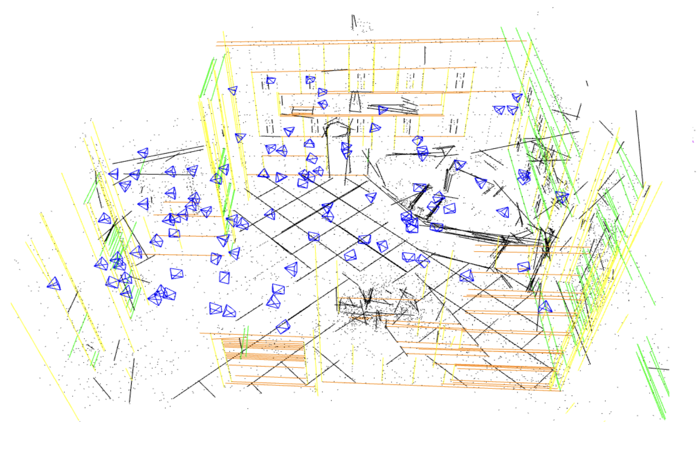

|
Yidan Gao I am a second-year PhD student in Computer Science at the Courant Institute School of Mathematics, Computing, and Data Science, advised by Prof. David Fouhey and Prof. Daniele Panozzo. My research interest lies in advancing 3D reconstruction by leveraging tools from vision and graphics. Prior to joining NYU, I received my M.S. in Mechanical Engineering from ETH Zurich, where I worked with Prof. Marc Pollefeys. Before that, I received my B.S. in Engineering Mechanics from Tongji University. |

|
ResearchI study how structure, data, and uncertainty can be combined to enable fast, accurate 3D reconstruction of real-world scenes. |

|
LookUp3D: Data-Driven 3D Scanning
Giancarlo Pereira*, Yidan Gao*, Yurii Piadyk*, David Fouhey, Claudio T Silva, Daniele Panozzo SIGGRAPH Asia 2025 We introduce Lookup3D, a high-speed 3D scanning system that uses a per-pixel color-to-depth lookup table to achieve megapixel, hundreds-FPS reconstruction of dynamic scenes with high accuracy. |
|  |
Robust Incremental Structure-from-Motion with Hybrid Features
Shaohui Liu*, Yidan Gao*, Tianyi Zhang*, Rémi Pautrat, Johannes L. Schönberger, Viktor Larsson, Marc Pollefeys ECCV 2024 We propose an incremental SfM pipeline that integrates structural features (points, lines, vanishing points, and associations) to achieve more accurate camera poses, richer maps, and uncertainty-aware reconstructions. |